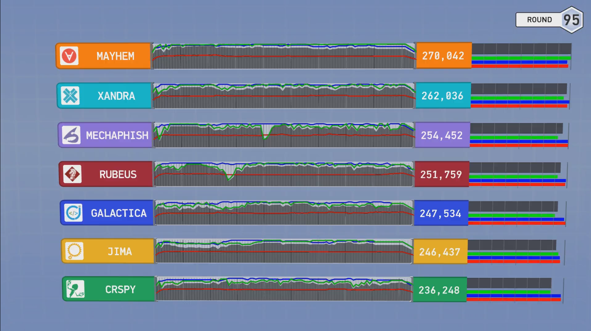
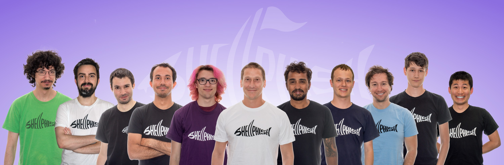

In 2014, with no battle plan and little idea of what it would do to our lives, Shellphish signed up for the DARPA Cyber Cyber Grand Challenge.
The CGC was a competition to create autonomous hacking systems that went head-to-head against each other in a no-humans-allowed computer hacking match.
This had never been done before.
There was no blueprint, and no one, especially not us, knew quite what to expect.
The competition was challenging beyond anything we had experienced before.
To qualify for the final event, we had to defeat many established security companies and researcher labs, with a system that we had to build in what little time we had left over from research and classes.
In the leadup to the final event, our team was pushed to the limit as we faced ever-increasing pressure to finish our system in time.
In the end, we made it.
This page is a central archive to hold the story of our participation in the CGC, track various things written about it around the internet, and provide a central index for our proud open-sourcing of the Mechanical Phish.
The Event
Our autonomous cyber-creature, the Mechanical Phish faced off against six other cleverly-named competitors and fought well, winning third place and a $750,000 prize (in addition to the $750,000 qualification award).
It was the top system not developed by a corporation, beating systems made by companies such as Raytheon, the best-ranking system on offense, and the second-best on defense.
It also marked the beginning of the obsolescence of humanity from yet another field…

The Team

From Left to Right:
Antonio Bianchi (anton00b)
“FIXME”
Kevin Borgolte (cao)
Scheduling, Infrastructure
Jacopo Corbetta (hacopo)
Resident Know-it-all
Francesco Disperati (nebirhos)
Chief Surfing Officer, Infrastructure
Audrey Dutcher (rhelmot)
Second Youngest Program Analysis Expert
Giovanni Vigna (zanardi)
The Professor - Hackademic Representative
Aravind Machiry (donfos)
Hack -> Crossfit -> Repeat
Chris Salls (salls)
Automated Exploitation Engine
Yan Shoshitaishvili (zardus)
Fearless(?) Captain
Nick Stephens (mike_pizza)
Chief Intern and Third Youngest Automated Exploitation Expert
Ruoyu Wang (fish)
Fish, Human CRS
Not in the Picture:
John Grosen (nezorg)
Youngest Program Analysis Expert
Paul Grosen (paul)
Youngest Program Analysis Intern, knows x86 better than you
Our Tools
As hackademics, we want to push forward the scope of what is possible.
To that end, we are open-sourcing every last line of code of the Mechanical Phish for the community to use, learn from, and build on!
The Cyber Grand Challenge was the first time anything like this was attempted in the security world.
As such, Mechanical Phish is an extremely complicated piece of software, with an absurd amount of components.
No blueprint for doing this existed before the CGC, so we had to figure things out as we went along.
Unfortunately, rather than being a software development shop, we are a “mysterious hacker collective”.
This means that Mechanical Phish has some rough components, missing documentation, and ghosts in the machine.
Our hope is that, going forward, we can polish and extend Mechanical Phish, as a community, to continue to push the limits of automated hacking.
For now, keep in mind that this was never designed to be turn-key, might not install without extreme effort, and might not work without a lot of tweaking.
Otherwise, have at it!
We have split the components of the Mechanical Phish up to form three categories:
Components that can be used as standalone tools in security research and CTF competitions, such as Driller (our crash discovery technique), Rex (our automated exploitation tool), Patcherex (for automated patching), and angrop (our automatic ropchain builder).
The glue components of the Mechanical Phish, containing everything specific to the CGC itself.
Want to Know More?
The Cyber Grand Challenge drew intense media attention.
We’ve compiled the set of media articles here that show us in the best possible light. Enjoy!
Mechanical Phish: Resilient Autonomous Hacking, Yan Shoshitaishvili, Antonio Bianchi, Kevin Borgolte, Amat Cama, Jacopo Corbetta, Francesco Disperati, Audrey Dutcher, John Grosen, Paul Grosen, Aravind Machiry, Chris Salls, Nick Stephens, Ruoyu Wang, Giovanni Vigna, IEEE Security and Privacy Magazine, vol. 16, no. 2, March 2018.

 (our crash discovery technique), Rex
(our crash discovery technique), Rex (our automated exploitation tool), Patcherex
(our automated exploitation tool), Patcherex  (for automated patching), and angrop
(for automated patching), and angrop (our automatic ropchain builder).
(our automatic ropchain builder). of the Mechanical Phish, containing everything specific to the CGC itself.
of the Mechanical Phish, containing everything specific to the CGC itself.